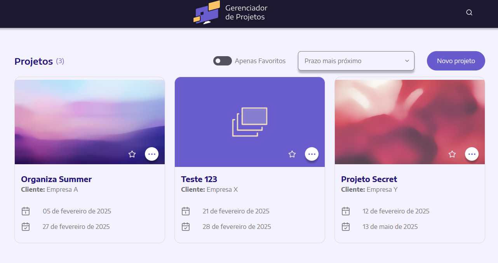

Projeto foi realizado como teste técnico para uma vaga de Desenvolvedor Frontend Pleno.

Objetivos
Projeto foi realizado como teste técnico para uma vaga de Desenvolvedor Frontend Pleno. A empresa forneceu o protótipo e as funcionalidades necessárias para a aplicação.
Funcionalidades
- Tela de listagem com filtro de favorito, ordenação e pesquisa.
- Pesquisa com histórico das últimas 5 buscas recentes
- Highligh no texto dos resultados que correspondam à busca
- Tela de edição e criação de projeto.
- Validação de campos
- Campos obrigatórios
- Opção de remoção com modal de confirmação.
Tech Stack
- Vite
- Vue
- Typescript
- RadixVue
- Pinia
- LocalStorage
- VueRouter
- LucideVue (ícones)
- DateFns